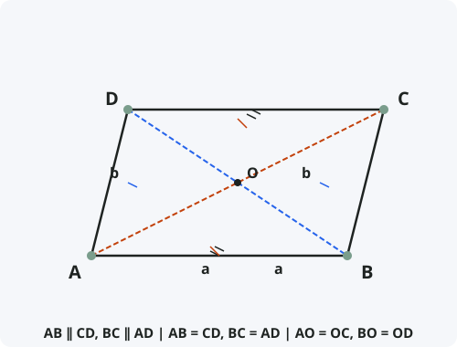

Параллелограмм
Определение
Параллелограмм — четырёхугольник, у которого противоположные стороны попарно параллельны.
Обозначения
Пусть дан параллелограмм ABCD.
AB, BC, CD, AD — стороны.
AC и BD — диагонали, пересекающиеся в точке O.
∠A, ∠B, ∠C, ∠D — углы.

Свойства параллелограмма
- Противоположные стороны равны: AB = CD, BC = AD.
- Противоположные углы равны: ∠A = ∠C, ∠B = ∠D.
- Сумма углов, прилежащих к одной стороне, равна 180°: ∠A + ∠B = 180°, ∠B + ∠C = 180° и т.д.
- Диагонали точкой пересечения делятся пополам: AO = OC, BO = OD.
- Диагональ делит параллелограмм на два равных треугольника: ∆ABC = ∆CDA.
- Сумма квадратов диагоналей равна сумме квадратов всех сторон: AC² + BD² = 2(AB² + BC²).
Признаки параллелограмма
- По определению: если в четырёхугольнике противоположные стороны попарно параллельны, то это параллелограмм.
- По равенству противоположных сторон: если AB = CD и BC = AD, то ABCD — параллелограмм.
- По равенству и параллельности двух сторон: если AB = CD и AB ∥ CD, то ABCD — параллелограмм.
- По диагоналям: если диагонали точкой пересечения делятся пополам (AO = OC и BO = OD), то ABCD — параллелограмм.
- По противоположным углам: если ∠A = ∠C и ∠B = ∠D, то ABCD — параллелограмм.
Доказательство основных свойств
Частные случаи параллелограмма
- Прямоугольник — параллелограмм, у которого все углы прямые (90°). Диагонали прямоугольника равны.
- Ромб — параллелограмм, у которого все стороны равны. Диагонали ромба перпендикулярны и делят углы пополам.
- Квадрат — параллелограмм, у которого все стороны равны и все углы прямые. Обладает свойствами прямоугольника и ромба одновременно.
Формулы
- Периметр: P = 2(a + b), где a и b — смежные стороны.
- Площадь через основание и высоту: S = a · hₐ = b · h_b.
- Площадь через стороны и угол: S = a · b · sin α.
- Площадь через диагонали и угол между ними: S = ½ · d₁ · d₂ · sin φ.
Примеры применения
Пример 1. В параллелограмме ABCD стороны AB = 8, BC = 5, угол A = 60°. Найдите площадь.
Решение: S = AB · BC · sin A = 8 · 5 · √3/2 = 20√3 ≈ 34,64.
Пример 2. Диагонали параллелограмма равны 10 и 14, угол между ними 30°. Найдите площадь.
Решение: S = ½ · 10 · 14 · sin 30° = 70 · 0,5 = 35.
Пример 3. Докажите, что четырёхугольник с вершинами в серединах сторон любого четырёхугольника — параллелограмм.
Решение: Это теорема Вариньона. Проведём диагональ. Средние линии двух треугольников параллельны диагонали и равны её половине. Противоположные стороны полученного четырёхугольника параллельны и равны — это параллелограмм.
Историческая справка
Свойства параллелограмма были известны ещё древнегреческим математикам. Евклид в «Началах» (Книга I) доказывает основные свойства параллелограмма, хотя сам термин «параллелограмм» появился позже.
Слово «параллелограмм» происходит от греческих слов «parallelos» (параллельный) и «gramma» (линия). В «Началах» Евклид использует термин «parallelogrammon».
Параллелограмм — одна из фундаментальных фигур в геометрии, на его свойствах основаны правила сложения векторов и многие физические законы.
Интересные факты
- Параллелограмм — центрально-симметричная фигура. Центр симметрии — точка пересечения диагоналей.
- Правило параллелограмма используется в физике для сложения сил, скоростей и других векторных величин.
- В архитектуре параллелограммы часто используются для создания динамичных, «движущихся» форм.
- Пантограф — механизм для копирования чертежей в масштабе — основан на свойствах шарнирного параллелограмма.
- Любой параллелограмм можно превратить в прямоугольник равной площади, «перекроив» его (метод равносоставленности).